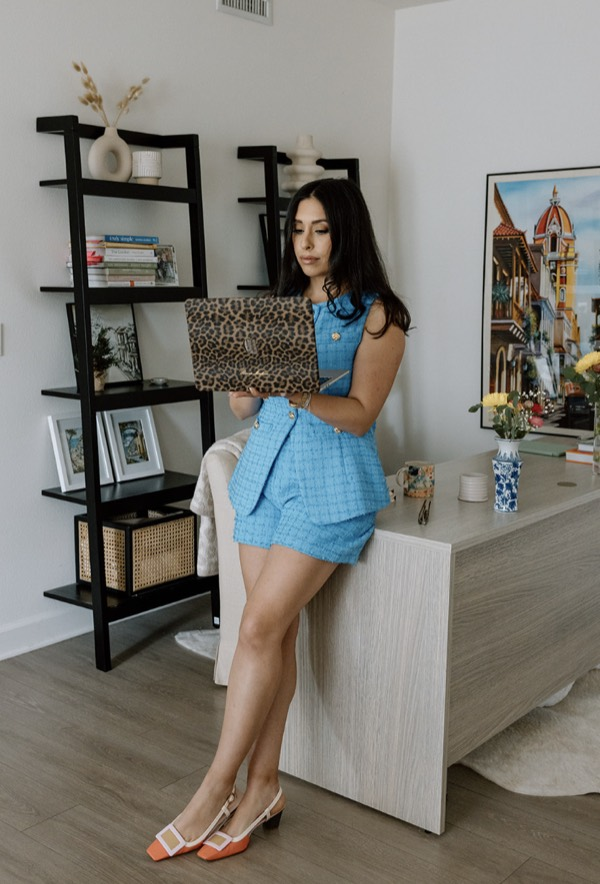

Learn the foundations
Context, prompting, Projects, reusable instructions, and voice dictation.
A 4.5-HOUR, HANDS-ON TEAM WORKSHOP
Your team doesn't need another AI lecture. They need a useful way to work by Monday.
A hands-on workshop where your team learns the foundations, builds practical AI workflows, and leaves with the resources to keep going.
BRING AI TO MY TEAMHOURS OF HANDS-ON
LEARNING
LIVE BUILDS
PARTICIPANTS
MAXIMUM
PREPARED WORKFLOW
CHOICES
Bring the work your team already does.
We'll use it to explore better prompting, reusable instructions, and practical workflows that make everyday tasks easier.
This workshop draws on the methods I've developed while training founders, executives, and teams.
THE METHOD
The workshop is designed around participation, useful context, and time to make something your team can keep using.
Context, prompting, Projects, reusable instructions, and voice dictation.
Complete a guided live build, creating a reusable AI work assistant.
Build from six prepared exercises individually or in breakout groups.
Demonstrate what works, troubleshoot, and leave with practical next steps.
A MENU OF USEFUL PLACES TO START
Participants choose from six prepared workflows during the workshop.
THE SMALL-CHANGE MATH
Explore what recovered time might look like across your team.
Potential annual capacity recovered.
Illustrative annual value of recovered time.
Illustrative scenario based on user-adjustable assumptions. Actual time savings depend on the workflows implemented, adoption, and team circumstances. Figures do not represent guaranteed workshop outcomes, cash savings, or additional revenue.
DOCUMENTED EXAMPLES
Problem: A reporting process that took multiple hours.
What changed: A repeatable team-owned reporting system.
Documented result: Approximately 15 minutes to prepare.
Problem: Everyday work needed a clearer AI starting point.
What changed: Workflows for inbox triage, meeting preparation, reporting, and brand monitoring.
Observed outcome: Participants built practical ways to continue.
Problem: Repetitive work needed more useful structure.
What changed: Practical guidance grounded in real work.
Outcome: A clearer, more repeatable approach for the team.

MEET SANAM
I spent over six years building and running a performance marketing agency, managing growth across beauty, fashion, and ecommerce.
After exiting my agency, I began helping founders, executives, and teams use AI to make the work they're already doing more efficient, organized, and repeatable.
10+ YEARS IN GROWTH MARKETING
$30M+ MANAGED AD SPEND
ONE AGENCY EXIT
TRAINING FOUNDERS, EXECUTIVES, AND TEAMS
OTHER WAYS TO WORK TOGETHER
Continued support identifying opportunities, improving systems, and applying AI to new workflows after the workshop.
INQUIRE ABOUT ADVISORY ↗Focused, hands-on AI training for founders and executives who prefer a personalized experience.
ASK ABOUT PRIVATE TRAINING ↗Curious where to start? Explore practical prompts, guides, and AI resources from Hello Sanam.
EXPLORE FREE RESOURCES ↗READY WHEN YOU ARE
Tell me about your team, the work you want to make easier, and what feels most urgent. I'll come back with the right next step.